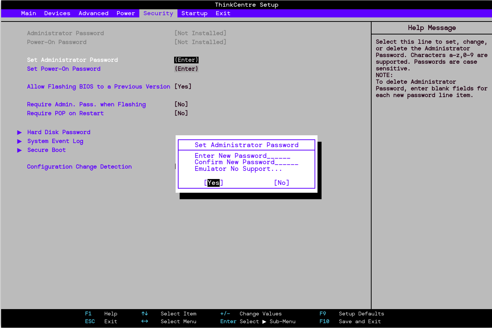

La contraseña de usuario o Power-On impide el acceso no autorizado al sistema durante el arranque. Aquí te explicamos cómo configurarla:
Acceso a BIOS/UEFI: Reinicia tu ordenador y presiona la tecla correspondiente (comúnmente F2, F10, Del o Esc) para entrar en la configuración de BIOS/UEFI.
Buscar la opción de seguridad: Navega a la sección de "Security" o "Security Settings".
Configurar la contraseña:
- Selecciona la opción "Set User Password" o "Set Supervisor Password".
- Introduce la contraseña deseada y confírmala.
- Guarda los cambios y sal de la BIOS/UEFI.
La contraseña de administrador ofrece un nivel adicional de seguridad al restringir los cambios en la configuración de la BIOS/UEFI.
Acceso a BIOS/UEFI: Reinicia el ordenador y accede a la configuración de BIOS/UEFI.
Buscar la opción de seguridad: Ve a la sección de "Security" o "Security Settings".

Establecer la contraseña:
- Selecciona "Set Supervisor Password".
- Introduce y confirma la nueva contraseña.
- Guarda los cambios y sal de la BIOS/UEFI.
Para evitar que el sistema arranque desde dispositivos externos (como USB, CD/DVD), sigue estos pasos:
Acceso a BIOS/UEFI: Entra en la configuración de BIOS/UEFI durante el arranque.
Buscar la opción de arranque: Navega a la sección de "Boot" o "Boot Options".

Desactivar dispositivos externos:
- Encuentra las opciones relacionadas con "Boot Order" o "Boot Device Priority".
- Desactiva el arranque desde USB o dispositivos externos, o mueve el disco duro interno a la parte superior de la lista de arranque.

Guardar cambios: Asegúrate de guardar los cambios antes de salir.
Configurar un orden de arranque seguro asegura que el sistema siempre intente arrancar desde el disco duro antes de otros dispositivos.
Acceso a BIOS/UEFI: Accede a la configuración durante el arranque.
Buscar la opción de arranque: Ve a la sección de "Boot" o "Boot Order".
Configurar el orden:
- Asegúrate de que tu disco duro o SSD está en la parte superior de la lista.
- Desactiva o mueve dispositivos que no sean necesarios.
Guardar cambios: Guarda la configuración antes de salir.
Además de las contraseñas y la configuración del arranque, considera implementar las siguientes opciones de seguridad:
- Secure Boot: Asegúrate de que la opción de "Secure Boot" esté habilitada. Esto ayuda a prevenir la carga de software malicioso durante el arranque.